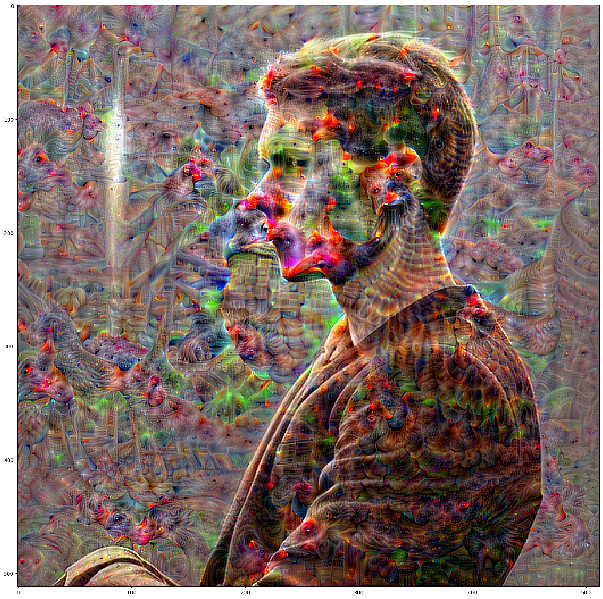
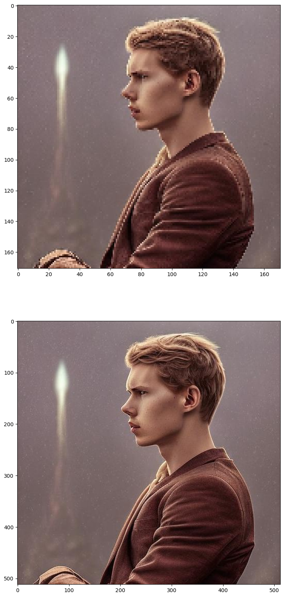

!pwd/Users/daniel.hunter/code/myblog/posts/post-with-code!pwd/Users/daniel.hunter/code/myblog/posts/post-with-codeimg = Image.open(Path.home() / 'Downloads' / 'AvatarAI.me' / '61.jpg')img
import numpy as np
import torch
from torchvision import transforms
mean = np.array([0.485, 0.456, 0.406])
std = np.array([0.229, 0.224, 0.225])
preprocess = transforms.Compose([transforms.ToTensor(), transforms.Normalize(mean, std)])
def deprocess(image_np):
image_np = image_np.squeeze().transpose(1, 2, 0)
image_np = image_np * std.reshape((1, 1, 3)) + mean.reshape((1, 1, 3))
image_np = np.clip(image_np, 0.0, 255.0)
return image_np
def clip(image_tensor):
for c in range(3):
m, s = mean[c], std[c]
image_tensor[0, c] = torch.clamp(image_tensor[0, c], -m / s, (1 - m) / s)
return image_tensorfrom torch.autograd import Variable
from tqdm.auto import tqdm
import scipy.ndimage as nd
def dream(image, model, iterations, lr):
""" Updates the image to maximize outputs for n iterations """
Tensor = torch.cuda.FloatTensor if torch.cuda.is_available() else torch.FloatTensor
image = Variable(Tensor(image), requires_grad=True)
for i in range(iterations):
model.zero_grad()
out = model(image)
# label = [00000,1,00000]
label = torch.zeros(1, dtype=torch.long)
label[0] = 779
loss = nn.CrossEntropyLoss()(out, label)
# import pdb ; pdb.set_trace()
# loss = out.norm()
loss.backward()
avg_grad = np.abs(image.grad.data.cpu().numpy()).mean()
norm_lr = lr / avg_grad
image.data += norm_lr * image.grad.data
image.data = clip(image.data)
image.grad.data.zero_()
return image.cpu().data.numpy()
def deep_dream(image, model, iterations, lr, octave_scale, num_octaves):
""" Main deep dream method """
image = preprocess(image).unsqueeze(0).cpu().data.numpy()
# Extract image representations for each octave
octaves = [image]
for _ in range(num_octaves - 1):
octaves.append(nd.zoom(octaves[-1], (1, 1, 1 / octave_scale, 1 / octave_scale), order=1))
detail = np.zeros_like(octaves[-1])
for octave, octave_base in enumerate(tqdm(octaves[::-1], desc="Dreaming")):
if octave > 0:
# Upsample detail to new octave dimension
detail = nd.zoom(detail, np.array(octave_base.shape) / np.array(detail.shape), order=1)
# Add deep dream detail from previous octave to new base
input_image = octave_base + detail
# Get new deep dream image
dreamed_image = dream(input_image, model, iterations, lr)
# Extract deep dream details
detail = dreamed_image - octave_base
return deprocess(dreamed_image)import torch
from torch import nn
from torchvision import models
# Define the model
network = models.vgg19(weights=models.VGG19_Weights.DEFAULT)
# layers = list(network.features.children())
model = network # nn.Sequential(*layers[: (27 + 1)])
if torch.cuda.is_available():
model = model.cuda()
# print(network)
# Extract deep dream image
dreamed_image = deep_dream(
img,
model,
iterations=30,
lr=0.03,
octave_scale=1.4,
num_octaves=5,
)viz(dreamed_image)
np.array(img).shape(512, 512, 3)nd.zoom(np.array(img), (1 / 1.4, 1 / 1.4, 1), order=1).shape(366, 366, 3)len(dreamed_image)10from more_itertools import zip_equal
import matplotlib.pyplot as plt
def prep_img(arr):
if isinstance(arr, Image.Image):
arr = np.array(arr)
arr = arr.squeeze()
if arr.shape[0] == 3:
arr = arr.transpose((1,2,0))
_H, _W, C = arr.shape
assert C == 3, arr.shape
if arr.dtype in [np.float32, np.float64]:
arr = np.clip(a=arr, a_min=0, a_max=1)
elif arr.dtype in [np.uint8]:
arr = np.clip(a=arr, a_min=0, a_max=255)
else:
raise ValueError(arr.dtype)
return arr
def viz(*arrs, ncols=1):
fig, axs = plt.subplots(nrows=len(arrs), ncols=ncols, figsize=(20,20), squeeze=False)
for arr, ax in zip_equal(arrs, axs.ravel()):
# import pdb ; pdb.set_trace()
ax.imshow(prep_img(arr))viz(
# dreamed_image[0],
# dreamed_image[5],
# dreamed_image[9],
nd.zoom(np.array(img), (1 / 3, 1 / 3, 1), order=1),
img,
)